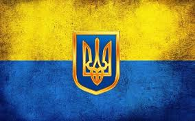

- Це
- Мужність
- Незламність
- Єдність
- Підтримка
- Любов
- Перспектива
- Процвітання
- Нація
Я Україна
Я маю дуже міцне, геополітичне та демографічне коріння, що історично формувалося в суперечках протистоянна та сумлінній співпраці.
З 1991 року, Я незалежна, та не вільна. Велике небажання сприйняти цей факт, сусід, що весь цей час видавав себе за товариша, увесь час заздрив, моїй свідомо вільній думці та моїм вільним поглядам. І в 2014 році, це проявилося в жалюгідній зраді. З того року в мене зявилися перші шрами, перші мої діти - українці, пішли з життя через загарбницькі погляди психічно хворого сусіда.
Моє становище похитнулося, я втратила деякі свої частини, мені було страшно усвідомити, що буде далі та яке може бути майбутнє з абюзивним сусідом, що в рази більший за мене. Та маючи багату історію та міцний сформрваний ген до волі та життя, з кжним місяцем ставала все сильнішою, як фізично так і морально, моє розуміння що мабутнє варто будувати, та розвивати, надало мотивації до життя та нових радощів. Потроху про мене почали дізнаватися в світі, дивитися на мене, як на незалежну та сильну
Мої звернення, потреби в допомозі залишалися дуже великим, та небажання бачити проблему, що не припустима в 21 столітті перетворилася в ігнорування, яке переросло в сумнозвісний день... День,я кий став чорним для Мене, новою трагедіє в моїй історії - 24 люього 2022р. З того дня, проживаю вже майже рік, в постійному рубцюванні своєї цілісності, та велик втратах моїх синів, дочок, що мужньо захищають мене від безперервного побиття сусідом.
Безберервна боротьба за життя на фронті війни, війни, яку цинічно розпочала росія і не воліє змиритися з своєю поразкою, продовжує вбивати УКРАЇНСЬКЕ населення, та руйнувати УКРАЇНСЬКі міста.
Та завдячуючи українським людям, українській згуртованості, миттєвій підтримці, перемога буде за Україною. Ідиологія вільного народу, жити та розвиватися, ніколи не буде зламана.
Слава Укаїні!!!
Героям слава!!!
русні пі...да!!!
Більш детально про про мою історію можна дізнатися тут